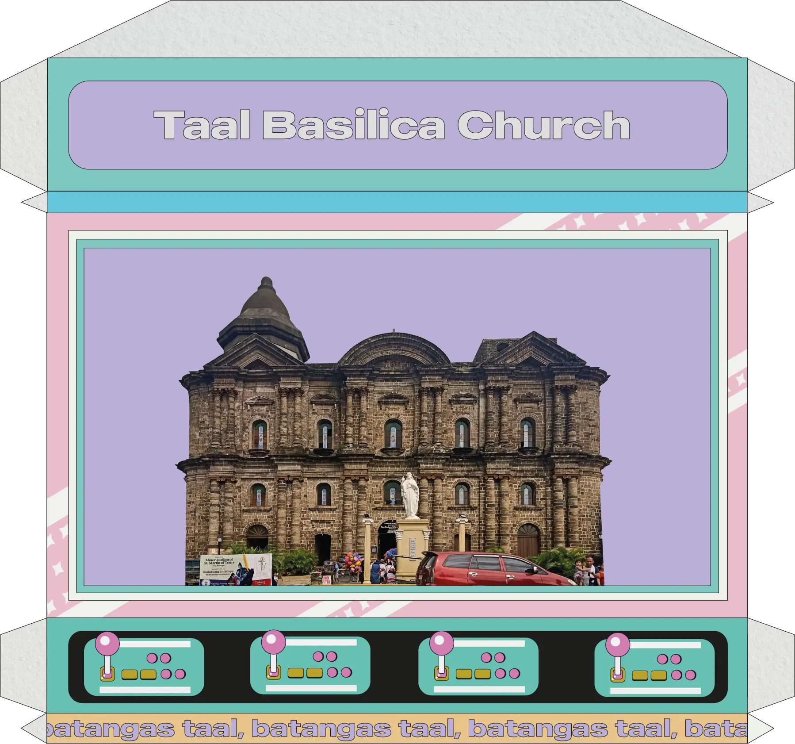
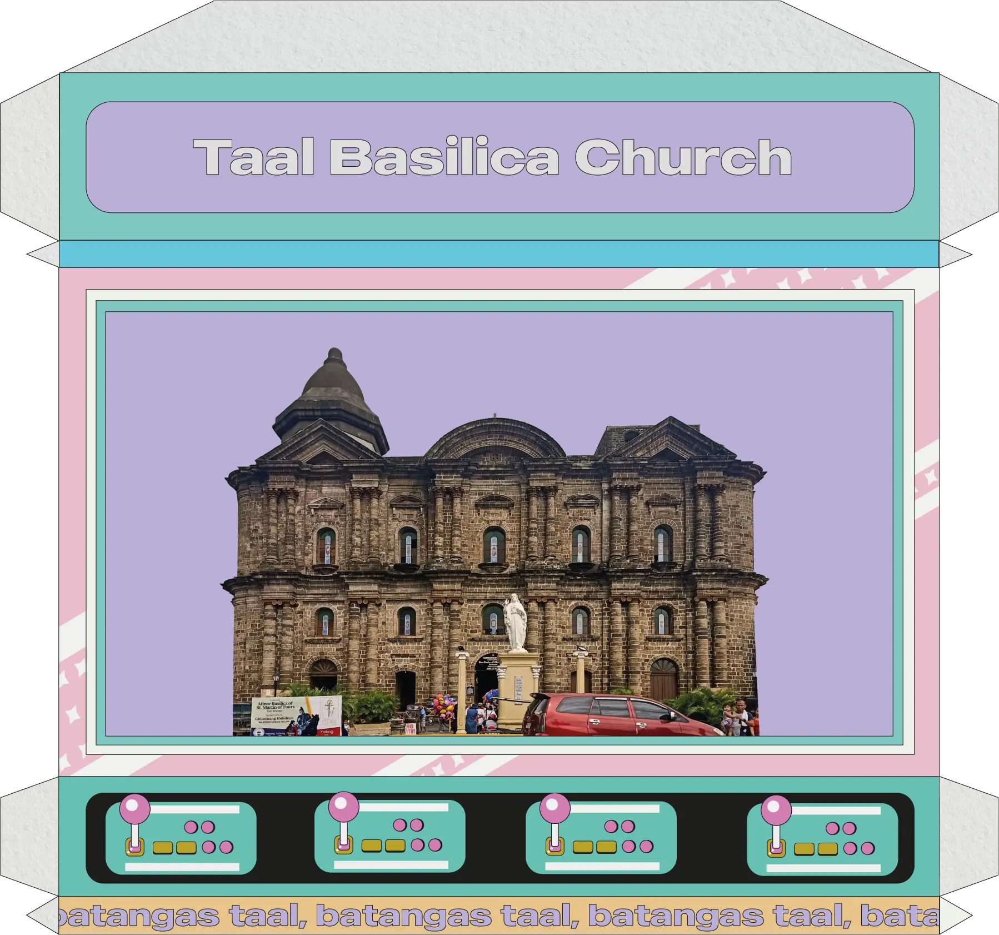
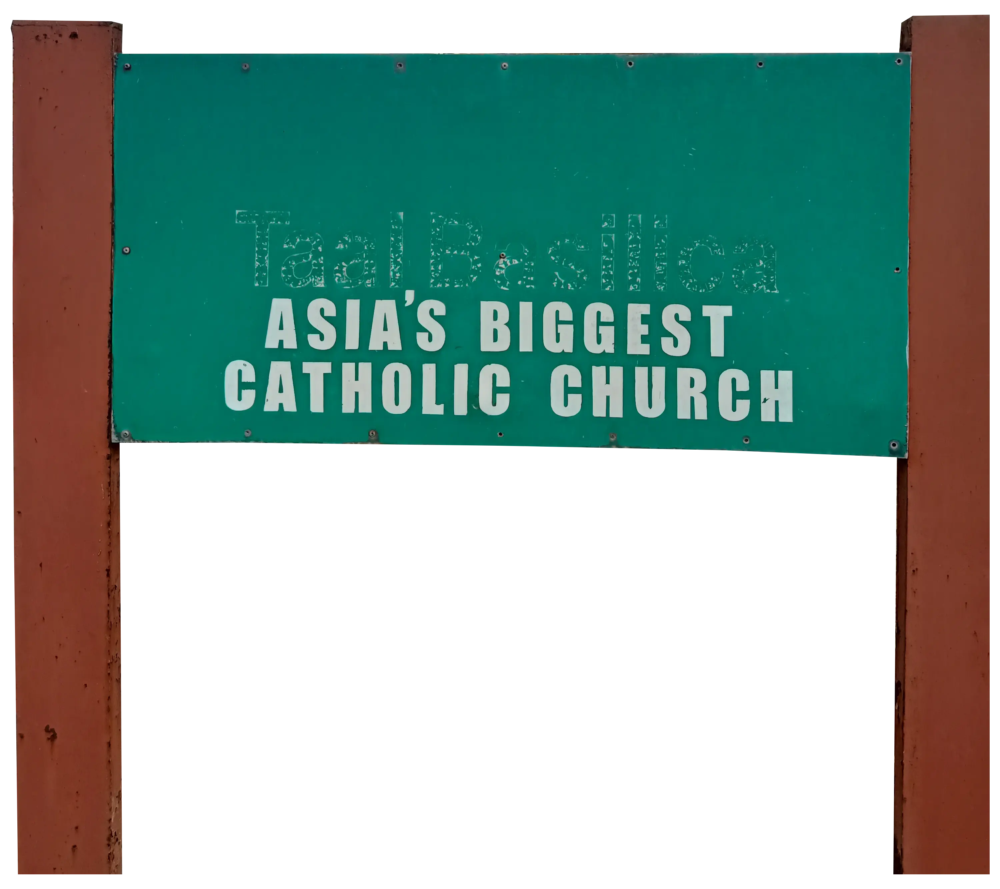
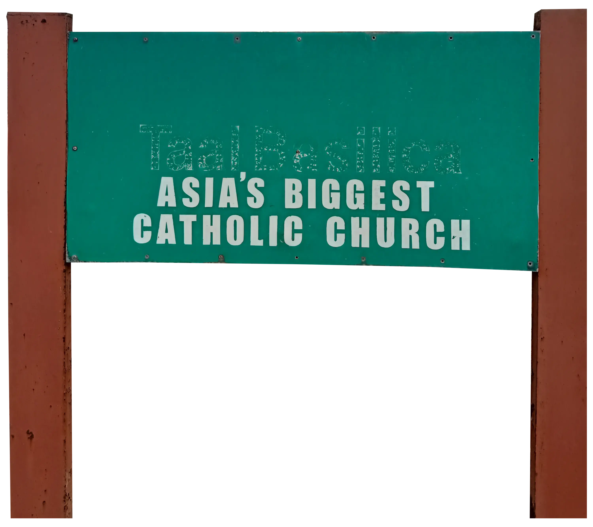

Taal Basilica Church is the largest Catholic church in Asia. It was first built by Padre Diego Espina in 1575, but it was destroyed in 1754 by the eruption of Taal Volcano. It was rebuilt in 1755, but an earthquake destroyed it once more.
The church we see today began construction in 1856 through Ar. Luciano Oliver. It was then inaugurated in 1865.
 Back

Back



 
